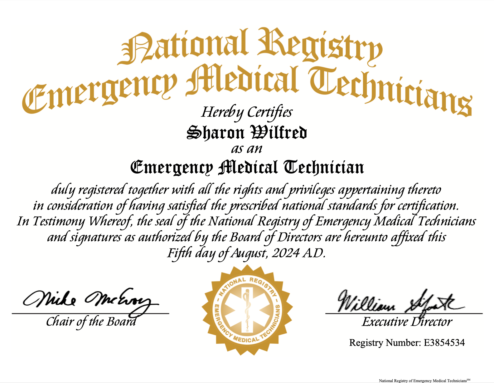

Hi! I'm Sharon Wilfred, and I'm a new EMT who’s really excited about emergency medicine. My journey into this field started because I’ve always been fascinated by medicine. I had the chance to shadow some amazing doctors and do several hospital rotations, which fueled my passion even more.
One doctor who really inspired me is Dr. Theodore. He’s a family medicine doctor in Manassas, Virginia, and has been in practice for over 20 years. Watching him interact with patients and his expertise in treating various conditions made me realize how much I wanted to be in this field.
Now, as an EMT, I get to offer treatment and support to patients in a variety of emergency situations. This past summer, I earned my certification after going through a pretty intense training program to learn the latest techniques in emergency response. I also joined NU EMS at Northeastern, which has been a fantastic way to build my skills and help out on campus.
I’m all about making a difference in people’s lives when they need it the most. Whether it's giving first aid, performing CPR, or just being there for someone, I’m committed to being there in their time of need!
